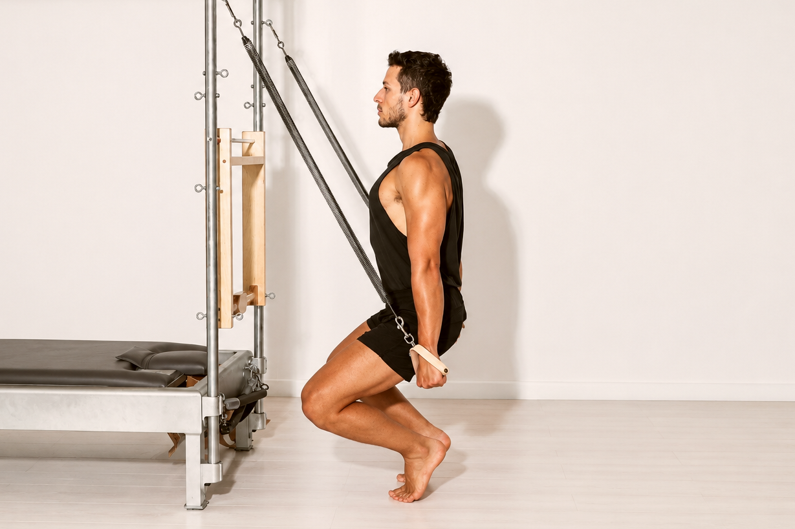

Day 01
28.09 · 12:00–15:00
Finding Your Tall Back
נחקור איך ליצור אורך בעמוד השדרה דרך הקשר בין האגן, הצלעות והראש, ואיך המכשירים יכולים לתת לנו תמיכה, התנגדות ומשוב כדי למצוא אותו. נלמד לזהות פיצויים ולתרגם את זה לכלים פרקטיים בהוראה.
הגב הארוך יהווה את נקודת המוצא והבסיס לכל מה שנלמד בבוטקאמפ.
תרגילים נבחרים:
· Foot Work · Roll Up · Spine Stretch · Long Stretch · Short Box Flat Back Frog Facing In & Out